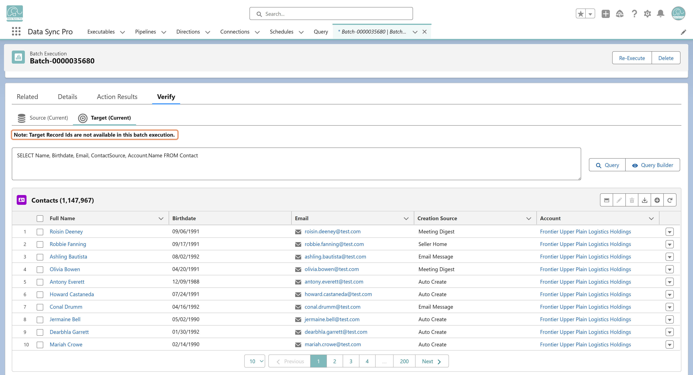

Verify may not work as expected when Bulk API is enabled and target record IDs aren't captured in the Batch Execution log. This typically happens with Insert or Upsert actions, where DSP submits the job asynchronously and the resulting record IDs aren't immediately returned.
For actions like Update, where target record IDs are known before submission, Verify continues to work as expected.
